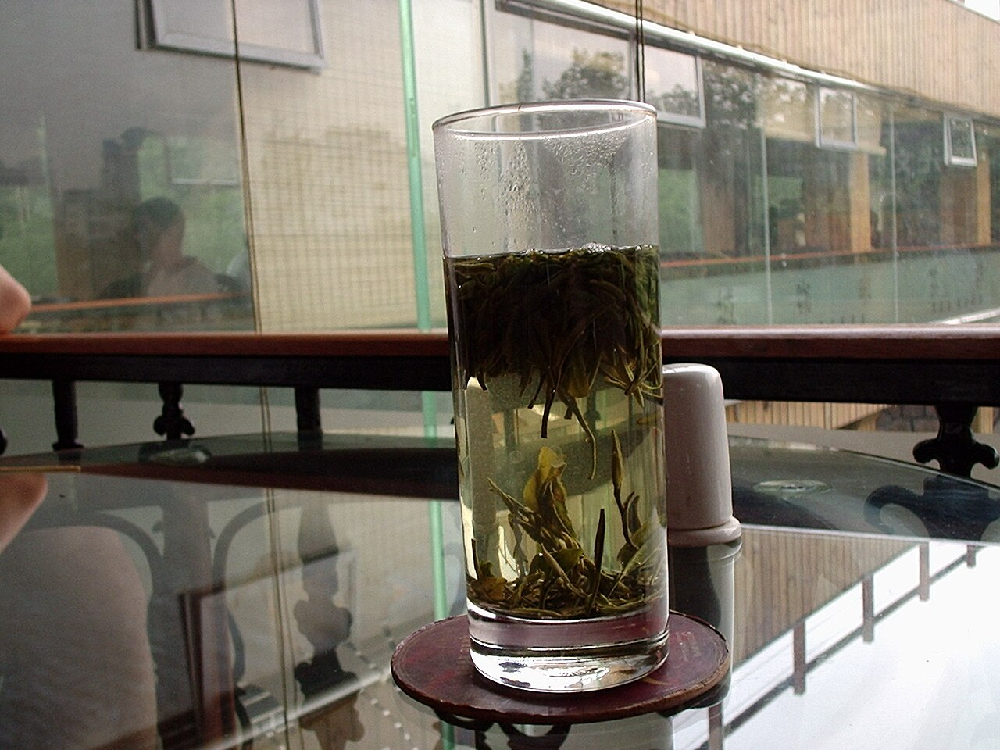
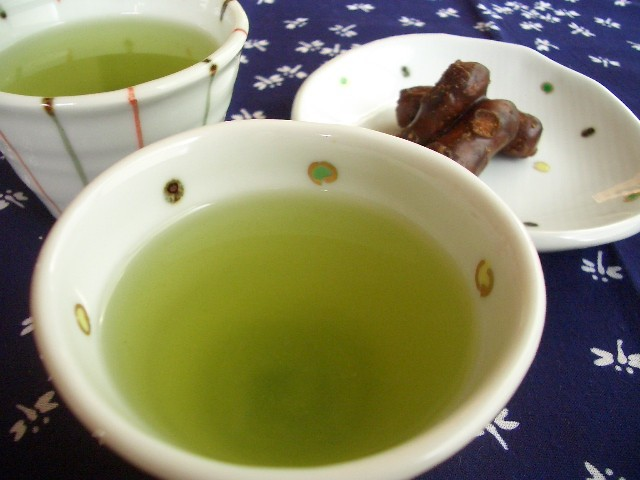

绿茶专题
信阳毛尖：为什么一杯早春绿茶会牵出开采期、山场、白毫与真假春茶之争
如果说龙井像江南春天里一首克制、平滑、偏扁形的短诗，那么信阳毛尖就是另一种气质：它更直、更锋利、更有“山里早春”的筋骨。两者同属中国绿茶，却来自完全不同的地理语境。龙井背后是杭州、西湖与炒豆香的平整审美；信阳毛尖背后则是大别山北麓、豫南云雾、昼夜温差、细圆光直的条索，以及消费者年年都绕不过去的“到底什么时候才算真春茶”问题。
2026 年 3 月，信阳毛尖再次因为开采期问题进入中文互联网讨论：有直播间和电商平台提前打出“2026 新茶”旗号，而信阳市茶叶协会则公开提醒，按照当季气候与茶树生长情况，真正的大面积春茶尚未到开采时点，预计上市要到 3 月下旬左右。这个提醒之所以重要，不只是为了打假，更因为它精准戳中了信阳毛尖最核心的理解入口：这是一种高度依赖节气、山场、嫩度与时序的茶，早一点晚一点，可能就是两个世界。

信阳毛尖到底是什么茶？为什么它和龙井差别这么大？
信阳毛尖属于中国绿茶，但不是扁炒型绿茶，而是更强调条索、白毫、鲜爽与山场气息的名优绿茶。常见的外形描述是“细、圆、光、直、多白毫”，这套审美和龙井那种扁平、挺秀、豆香板栗香的判断体系很不一样。你可以把它理解成两条不同的中国绿茶语言：龙井在讲“压扁、锅炒、平整、清润”，而信阳毛尖在讲“条紧、毫显、鲜高、带山气”。
这种差异首先来自原料和整形方向。信阳毛尖更常以一芽一叶或一芽二叶初展为基础，要求芽叶细嫩，成茶条索紧秀；龙井则更依赖锅中理条和压扁形成标志性叶形。其次是风味目标不同。好的信阳毛尖往往不是温吞的，它常常更鲜、更扬、更带一点收束感，回甘和生津也更容易被喝出来。对初学者来说，它很适合用来理解中国绿茶内部并不是“都差不多”。

为什么 2026 年“未开采先卖茶”会引起讨论？
因为信阳毛尖的价值高度依赖“时令真实性”。信阳市茶叶协会在 2026 年 3 月中旬发布提醒时，核心意思很明确：根据当时气候条件和茶树生长状态，春茶还没到普遍开采期，消费者看到大量“抢鲜上架”的 2026 毛尖，要保持警惕。这个提醒背后不是简单的行政口径，而是茶叶世界里非常现实的常识：节气不是营销词，它决定了叶片嫩度、内含物积累和风味轮廓。
对于茶客来说，真正值得学会的，不是死记“哪天最贵”，而是理解为什么早春茶会被重视。冬天过后，茶树养分积累较多，早春生长节奏慢，芽叶细嫩，氨基酸比例通常更有优势，茶汤就更容易呈现鲜、净、柔、清的方向。但如果“早春”只是商家提前借用的标签，叶片实际状态和产地时令对不上，最终喝到的就常常只剩一个名字。
信阳毛尖的核心产区怎么看？“五云两潭一寨”到底是什么意思？
谈信阳毛尖，绕不开那句经常被反复提到的产区概括：五云两潭一寨。它一般指车云山、集云山、云雾山、天云山、连云山，外加黑龙潭、白龙潭以及何家寨这一带的核心地理单元。对普通读者来说，不必把它背成考试答案，但要知道它意味着两件事：第一，信阳毛尖不是一个平面的商业名称，而是和具体山场深度绑定；第二，不同小产区之间，海拔、湿度、云雾、土壤、朝向与采摘时点，都会让成茶风格出现细微却真实的差别。
这也是为什么很多老茶客买毛尖时不只问“是不是信阳的”，还会继续问“哪个山场”“什么时候采”“是一芽一叶还是更开一些”。这种问法听起来挑剔，但它恰好说明信阳毛尖的价值并不完全在品牌，而在原料与地理来源的对应关系。站在知识体系的角度，它也能帮助读者理解中国名茶为何总是要和地方名字一起读：不是装神秘，而是因为风土本身就是味道的一部分。
信阳毛尖是怎么做出来的？为什么“火候”特别重要？
从鲜叶到成茶，信阳毛尖通常会经历筛分、摊放、杀青、揉捻、理条、烘焙等环节。不同作坊和现代工厂在设备上会有差异，但整体逻辑很稳定：先让鲜叶适度失水变软，再通过热力尽快钝化酶活性，随后通过揉捻和理条让条索逐渐紧、细、直，最后以烘焙把含水量降下来，稳定香气与保存状态。
这类茶最怕两个极端：一是杀青不到位，青气重、入口发散；二是火气过头，茶汤发燥，鲜活感被盖住。真正好的信阳毛尖并不是“越香越好”，而是香要清，火要净，口感要鲜而不飘、浓而不浊。很多资深茶客会说这茶“火工见真章”，说的就是这里：你喝到的那股高扬清鲜，不是天然摆在那里，而是被制作过程一点点拎出来的。

信阳毛尖喝起来是什么感觉？怎样才算好？
好的信阳毛尖，闻起来通常是清高而不闷，既有鲜气，也能感到一点干净的熟栗香、豆鲜感或山野植物气。它不一定像花香型乌龙那样一鼻子就扑出来，但会有一种更靠近“早春山间空气”的明亮度。入口后，茶汤应该是鲜爽、有力度、带回甘，舌面和喉间会有比较明确的生津感。
如果一款毛尖只剩苦、涩、燥、粗，那通常意味着原料老了、工艺糙了，或者冲泡失手了。反过来，如果一款茶看上去非常“白毫密布”，但喝起来虚、空、散，也未必说明它好。白毫是观察入口，不是全部答案。信阳毛尖真正迷人的地方，是它能把鲜嫩与力量同时放进一杯茶里：既有春天的轻，也有山地绿茶的骨架。

怎么泡信阳毛尖，才不把它泡苦？
信阳毛尖最适合的仍然是玻璃杯或盖碗。玻璃杯适合初学者，因为你能直接观察芽叶上下浮沉、白毫状态和汤色变化；盖碗则更适合想要控制浓淡的人。实用起点可以是 80°C 到 88°C 左右的水，别一上来就用滚水猛冲。对很多细嫩毛尖来说，过高水温最容易把鲜甜感冲散，把苦涩拉出来。
如果用盖碗，100 到 120 毫升配 3 克左右干茶是一个很稳妥的起点。前两泡不宜久闷，通常 10 到 20 秒就足够，之后再略微延长。若用玻璃杯，可以先注少量水润开，再高冲补水，让茶叶慢慢舒展。信阳毛尖最值得珍惜的，通常是前段那种鲜、净、亮的节奏，而不是把一杯茶硬泡到发苦后还要夸它“耐泡”。
买信阳毛尖时，普通人最容易踩什么坑？
第一，是把“越早越好”理解成绝对真理。早春确实珍贵，但前提是真正符合当地开采时序。第二，是把“白毫多”当成唯一指标。白毫重要，却不能替代香气、汤感、净度和回甘。第三，是只认包装和价格，不看产区说明与上市时间。信阳毛尖每年都有人抢“头采”概念，但对大多数读者来说，稳定、干净、来源清楚、价格不过度虚高的茶，往往比追逐最早几天的标签更值得买。
如果想快速建立判断框架，可以把问题缩成四个：是不是当季时令合理？产地信息是否清楚？干茶条索和白毫状态是否自然？冲开之后，鲜爽与净度是否站得住？这四个问题，比任何直播间话术都有效。也正因为如此，信阳毛尖非常适合作为“消费识茶”的训练茶：它让你知道，真正的好茶不只是贵，而是各个环节都能自圆其说。
为什么信阳毛尖值得成为理解中国绿茶的第二站？
因为它和龙井几乎构成了一组极好的对照。读完龙井，再读信阳毛尖，读者会立刻意识到：同样是绿茶，中国茶内部却可以有完全不同的审美标准、制作逻辑、冲泡策略与地方叙事。龙井让你认识“锅炒、压扁、江南清润”；信阳毛尖则让你进入“条索、白毫、山场、时令与真假春茶辨识”。
更重要的是，信阳毛尖把“喝茶”从单纯的口味喜好，推进到对时间、地理和市场秩序的理解。你喝的不是一个抽象名词，而是一套由节气、采摘、制茶、山场和消费认知共同构成的系统。对一个茶类知识网站来说，它不是简单的“下一篇绿茶稿”，而是把茶知识从风味介绍推进到产区与市场识别的重要一步。
来源参考
- 百度搜索聚合结果：2026 年 3 月关于“信阳市茶叶协会声明、信阳毛尖春茶未到开采期、预计 3 月下旬上市”等公开报道摘录。
- 百度搜索聚合结果：关于信阳毛尖传统工艺中筛分、摊放、杀青、揉捻、理条、烘焙等流程的公开资料摘录。
- 百度搜索聚合结果：关于信阳毛尖核心产区“五云两潭一寨”及车云山、黑龙潭等地理信息的公开资料摘录。
- 站内图片来源记录